Generic effects
Every shared effect visual a technique without its own hand-made animation can show: 252 pieces in 5 groups, before we source better ones.
When a technique has no animation of its own, these layers draw it: at the cast start a soft glow, a reversed chakra burst and a seal circle; in the wind-up hand-seal glyphs and a chakra gather; at release a muzzle flash, the element's projectile and a ribbon trail; then the element's burst, splash or slash, a finisher (pillar, slam, smoke) and a ground mark. Some layers are drawn by code (glows, waves, rings, trails) and have no picture here. Type a comment under anything to keep, replace or describe it; the buttons save all comments to one file.
Shared painted effects 66
66 flipbooks every technique without its own animation draws from: bursts, splashes, gathers, slashes, rings. Shown as the game draws them (the crisp repaint).
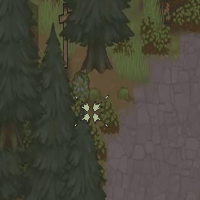
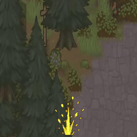
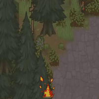
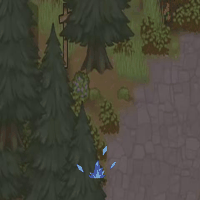
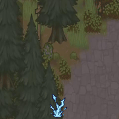
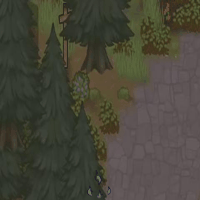
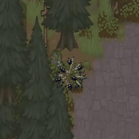
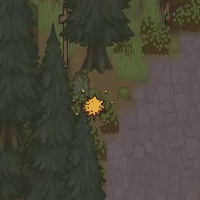
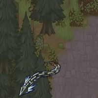
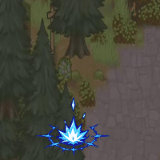
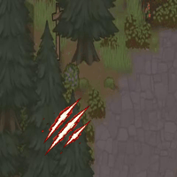
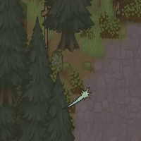
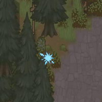
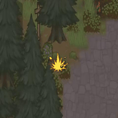
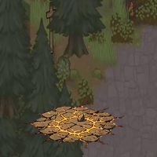
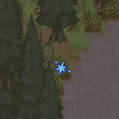
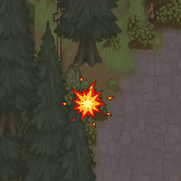
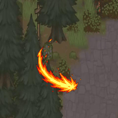
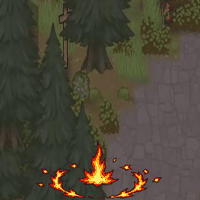
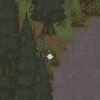
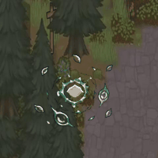
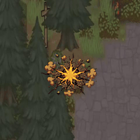
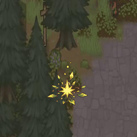
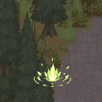
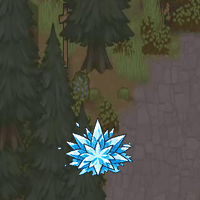
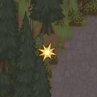
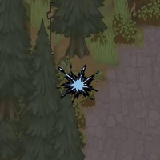
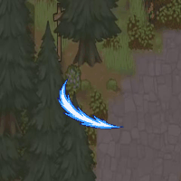
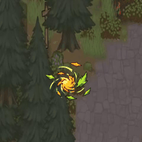
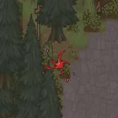
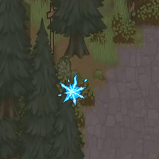
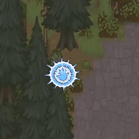
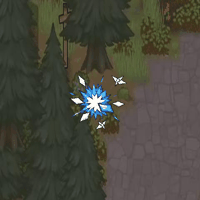
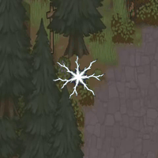
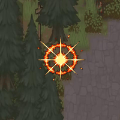
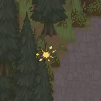
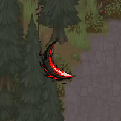
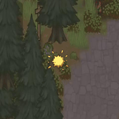
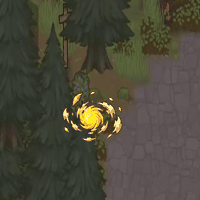
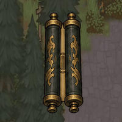
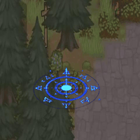
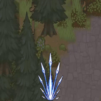
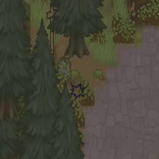
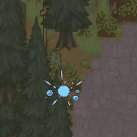
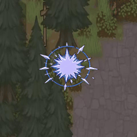
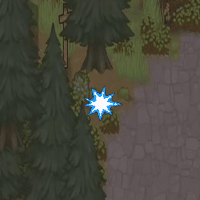
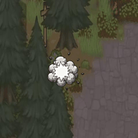
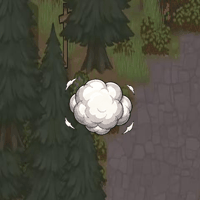
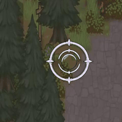
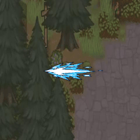
Barrier rings 14
The ring a barrier or wall technique raises, one per material.
Element sets 64
Eight pieces per element (earth, fire, ice, lightning, sand, water, wind, wood): projectile, impact, shards, wall, crescent, ground mark and beam.
Particles and marks 48
Small pieces scattered by the generic layers, plus the seal and summon circles.
Soft sprites, overlays and bolts 60
The older soft glow sprites (glows, rings, beams), status overlays and bolt frames.